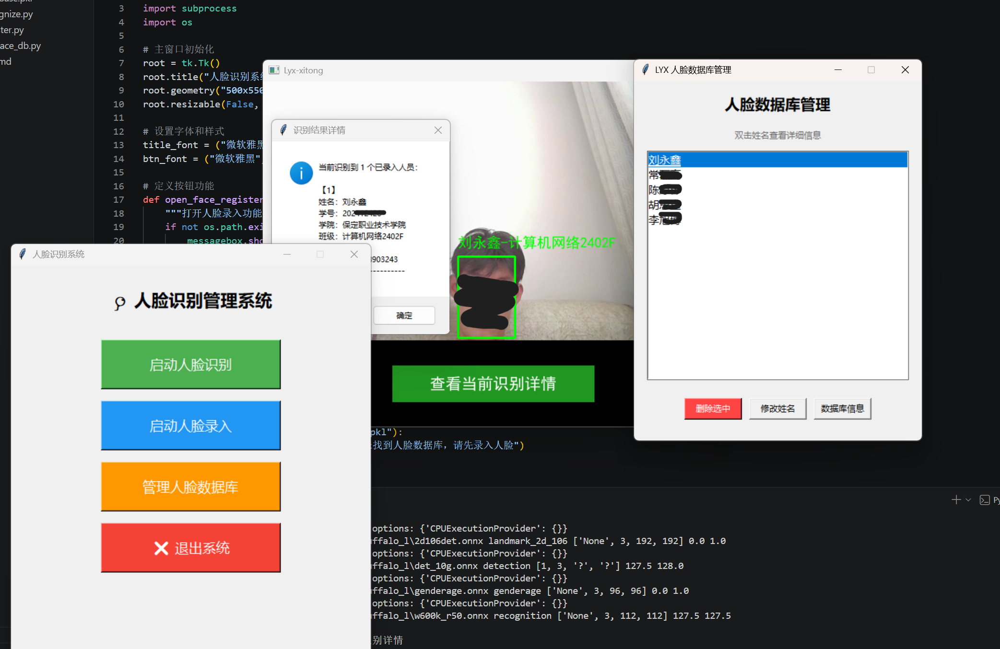
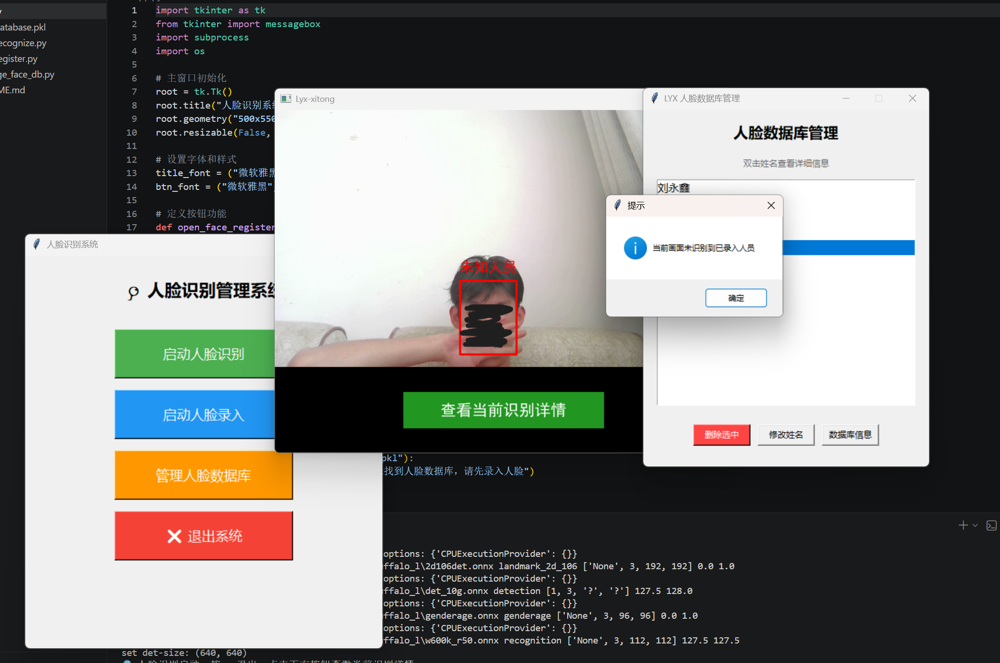

全栈Python人脸检测系统
技术栈
Python
OpenCV
InsightFace
NumPy
PIL
Tkinter
Pickle
核心三大功能板块
✅ 人脸识别板块
实时调用摄像头完成人脸检测与身份核验，毫秒级返回识别结果
✅ 人脸录入板块
可视化引导采集人脸样本，自动提取特征向量存入本地数据库
✅ 人员数据管理板块
支持人员信息的增删改查，一键完成人脸数据库的维护与清理
整体识别准确率达到95%，满足日常场景下的实时识别使用需求
✨ 特色功能：查看当前识别详情
摄像头画面下方设置专属功能按钮，点击后立即暂停摄像，截取当前帧画面，弹窗展示画面中所有已识别人员的完整信息，方便结果回溯核验。
项目实现亮点
- 利用InsightFace预训练模型完成人脸特征提取，结合NumPy完成图像预处理与特征比对，优化识别速度满足实时识别要求
- 通过os模块完成人脸数据集的文件管理，使用Tkinter开发可视化交互界面，支持用户信息录入、人脸数据库管理等全流程操作
- 解决了传统人工监控效率低、识别精度不足的问题，可实现对指定人员的实时身份监测与识别
项目说明
这是一套完全端侧运行的轻量化人脸识别系统，无需依赖云端服务，所有运算都在本地设备完成，部署门槛低、运行稳定，可直接落地用于小型场景的人员身份核验需求。
项目运行效果截图

